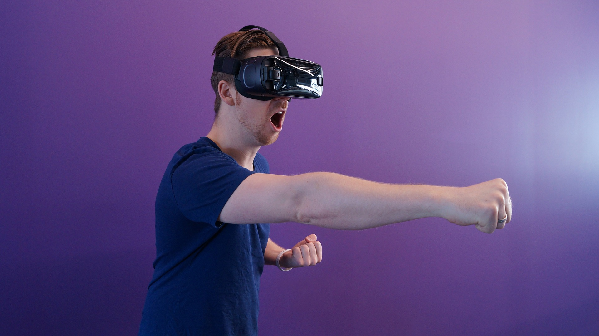

VR은 Virtual Reality의 약자로, 가상 현실을 의미한다.
가상현실 속에서 사용자는 시각 뿐 아니라 청각, 촉각 등 다양한 감각을 이용해 마치 현실세계에 있는 것과 같은 기분을 느끼게 된다.
우리가 현실에서는 경험하기 어려운 상황을 가상 현실 속에 구현하여 VR을 통해 체험할 수 있기 때문에 평소 위험부담이 큰 액티비티나 공포체험 등이 VR콘텐츠로 많이 활용된다.

'뮬란'은 아버지 대신 전쟁에 참가해 나라를 구하는 과정을 그린 애니메이션으로, 역동적인 액션을 필요로 한다.
또한 '전쟁'이라는 배경과 뮬란의 거짓 신분이 이야기 전개 과정에 긴장감을 조성하여 참여자가 가상 현실의 주인공이 되는 VR게임의 활용도가 높아 보인다.
이야기의 배경이 되는 하얀 설산이나 잔치가 벌어지는 궁의 풍경, 꽃이 잔뜩 피어있는 뮬란의 집 등을 구현하여 사용자에게 시각적인 즐거움 또한 제공할 수 있다.
'뮬란'을 활용한 VR콘텐츠는 움직임이 많고 긴박하게 상황이 전개되는 장면을 중심으로 한다. 위험에 처한 부대를 뮬란이 기지를 발휘하여 퀘스트를 하나씩 해결하고 적장의 검과 황제의 목걸이를 얻는 것을 최종목표로 한다.
각각 퀘스트의 난이도를 다르게 설정하여 사용자가 난이도를 조정하여 게임에 참여할 수 있도록 한다.
'복동이'와 '무슈'를 뮬란의 조력자로 설정하여 도저히 퀘스트를 깨기 어려운 상황에 뮬란에게 힌트를 주는 역할을 하도록 한다.
"뮬란! 서둘러. 가족들이 깨기 전에 빨리 나가야 해.
너무 겁먹지는 마. 든든하고 멋진 나, 무슈가 있잖아.
그리고 너 생각보다 남장이 잘 어울리는데?
아차차, 시간이 없어. 이제부터 너가 경험하지 못했던 세계가 펼쳐질거야.
잠깐 현실은 제쳐두고 새로운 세계를 즐겨보자구! "
부대에서 패싸움을 일으키고, 형편없는 실력으로 부대에서 쫓겨나게 생긴 뮬란.
부대에서 쫓겨나지 않고 샹에게 인정받으려면 무언가 보여줘야 한다!
오기로 가득 찬 뮬란에게 높은 기둥 꼭대기에 꽂힌 화살이 눈에 들어오는데...
간신히 부대에서 쫓겨나지 않는 데에 성공한 뮬란.
하지만 아직도 뮬란을 보는 부대원들의 눈빛이 곱지만은 않다.
뮬란이 부대에 계속 남아있기 위해서는 체력을 쌓고 기술을 익혀야 한다.
<활쏘기>, <모래주머니 나르기>, <샹과의 겨루기> 를 성공하시오.
오합지졸에서 막강한 군대로 거듭난 샹의 부대.
무슈와 복동이의 편지 조작 사건으로 부대는 때이른 출정을 하게 된다.
춥고 험한 설산에서 비교할 수도 없이 엄청난 수의 흉노족과 대면한 샹의 부대.
과연 이 위기를 잘 헤쳐나갈 수 있을까?
샨유의 계획을 알게 된 뮬란 일행이 부리나케 궁으로 돌아오지만 그들의 말을 믿어주는 사람은 아무도 없다.
결국 샨유는 황제를 납치해 협박하기 시작하고...
황제의 목숨이 위험하다! 빠른 시간 내로 황제를 구출하라!
원수는 외나무 다리가 아닌 궁궐 지붕 위에서 만난다!
뮬란과 샨유, 그 누구도 물러설 곳이 없다.
과연 뮬란은 나라를 구하고 영웅이 될 수 있을까?